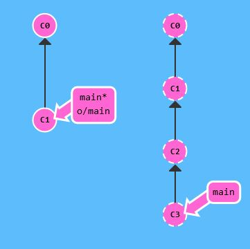
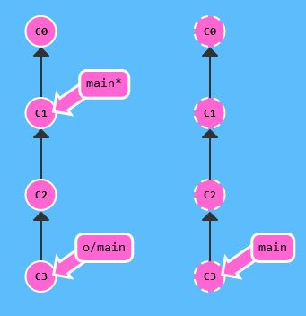

Git fetch
Allgemeine Beschreibung zu diesem Befehl
Der Befehl "git fetch" holt Daten von einem remote Repository in das lokale Repository. Er sorgt also dafür, dass die Commits heruntergeladen werden, die das remote Repository hat, das lokale aber nicht. Außredem updated er wohin die remote branches zeigen und synchronisiert damit die lokale Repräsentation des remote Repository mit dem tatsächlichen Zustand des remote Repository. Es wird über das Internet (via Protokolle wie http:// oder git://) mit dem Git Repository kommuniziert.
Es ist allerdings zu beachten, dass der Download-Schritt nicht dafür sorgt, dass das lokale Repository dem remote Repository gleicht!


Vom ersten Bild (links) zum zweiten Bild (rechts) ist der Unterschied, dass rechts ein neuer branch erstellt wurde, an der Stelle an der man sich gerade befunden hat. In diesem Fall der main branch.